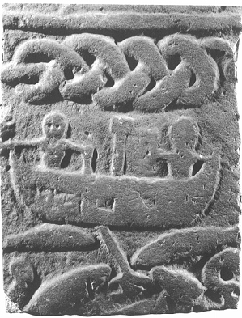

Aesir'in en ünlü ve güçlü iki tanrısı olan Odin ve Thor, birbirine taban tabana zıt şahsiyetlerdir. Odin, şairlerin, kralların, savaşçıların ve büyünün tanrısıdır. Thor ise Vikinglerin, yani fiyortlarda yaşayan Norveç ve İzlanda halkalarının her gün yakardıkları tanrıdır. Dumézil, bu iki tanrıyı birer tip olarak görür ve buna göre onları sınıflandırır. İskandinav tanrılarını işlevlerine ve kurucu öğelerine göre sınıflandırırken, Odin'i baş tanrı, kral, rahip ve büyücü olarak ele alır. Thor'un ise özünde sert ve saldırgan bir savaş tanrısının özelliklerini sergilediğini düşünür. Dumézil'in yaptığı bu ayrım, Viking çağı mitlerine ya da inanışlarına uygulandığında fazla basitleştirici olmasının yanı sıra eksiktir de. Thor'un, tanrıları, ezeli düşmanları olan devlere karşı korumak için savaştığına hiç kuşku yoktur. Ama Odin de savaşla yakından ilgili bir tanrıdır; seçilmiş şampiyonlarını kollayıp onları kendisine yarenlik etmeleri için savaş meydanlarından toplar. [S.63]
Odin
Bu iki tanrıdan ilki olan Odin, çok daha karmaşık bir simadır. Kimi bilginler, bu karmaşıklığın, eskiden diğer tanrılara ait olan ıralayıcı özelliklerin ve etkinlik alanlarının yüzyıllar içerisinde Odin'in kişiliğinde toplanmış olmasından ötürü ortaya çıktığı kanısındadırlar. Odin'in çok sayıda adının olması, onun doğa-sındaki çeşitliliği oldukça açık biçimde yansıtmaktadır. Bu adlar tam olarak takma ad olmamakla birlikte, benzer bir niteliğe sahiptirler; İskandinavlar, 'çağrılmak' anlamına gelen Heita fiilinden türetilmiş bir sözcük kullanarak bu adlara Heiti derler.
Snorri, bu kez Gylfaginning'deki Üçüncü'nün ağzından konuşmak suretiyle, Odin'in her şeye hükmeden en eski ve ünlü tanrı olduğunu söyler. Tıpkı çocukların babalarına itaat ettikleri gibi, diğer tanrılar da ona itaat ederler; fakat elbette bu eski-denmiş. Üçüncü, onu 'Her Şeyin Babası' anlamına gelen Alfaðr diye de adlandırır ama ona 'Katledilmişlerin Babası' (Valfaðr), 'Asılmışların Tanrısı' (Hangaguð), 'Esirlerin Tanrısı' (Haptaguð), 'Yüklerin Tanrısı' (Farmaguð) da der ve hatta kral Geirrod'a yaptığı ziyaret sırasında Odin'in kendisinden söz ederken pek çok farklı ad kullanmış olduğu da ekler. Bu faslın ardından, Grimnismál şiirinde Odin'in adlarının listesinin verildiği dizeleri alıntılamayı da ihmal etmez:
Kendime Grim derim ben,
Ve Ganglari,
Herian, Hialmberi,
Thekkr, Thirdi,
Thunn, Unn,
Helblindi, Har,
Sann, Svipall,
Sanngetal... [S.64]
Bu liste, böyle on altı dize boyunca sürmektedir. Elbette Gangleri buna daha fazla katlanamaz ve patlar: "Amma çok ad verdin ona yahu! Tanrım; bir kimsenin bu adların her birinin nasıl ortaya çıktığını söyleyebilmesi için herhalde allame olması gerekir".
Her halükarda, bu adlardan bazılarının ne anlama geldiğinin bilinebilmesi için, İskandinav etimolojisi hakkında engin bir bilgiye sahip olunması gerektiğine kuşku yoktur. Grímr genellikle 'maskeli' ya da 'kukuletalı' olarak yorumlanmaktadır. Heiran, 'ordu' anlamına gelen herr adıyla bağlantılıdır. Hiálmberi, 'miğfer' anlamına gelen hiálmr sözcüğünü barındırır. Hár adının 'Yüce' anlamına geldiği açıktır ama alternatif bir etimoloji bu sözcüğün 'Kör' anlamına geldiğini kabul etmektedir; yine de bu yalnızca bir iddiadır ve kanıtlanmış değildir. Svipall, 'uçarı' ve 'yanardöner' anlamlarına gelen svipull sıfatıyla bağlantılıdır. Geri kalan dizelerde ise 'kışkırtıcı' (Hnikarr), 'zayıf gözlü' (Bileygr), 'ateş gözlü' (Báleygr), 'şirret' (Bolverkr), 'uzun kukuletalı' (Síðhottr), 'zaferin babası' (Sigfoðr), 'kör gözlü' (Blindi), 'büyülü asası olan' (Gondlir), 'hadım' (Iálkr), 'oyunbaz' (Kialarr), 'yok edici' (Viðurr), 'dehşet verici' (Yggr), 'rüzgâr' (Váfuðr), 'erkeklerin tanrısı' (Veratýr) gibi anlamlara gelen adlar yer almaktadır. Bu adlar, Odin'in farklı yönlerine ve yapıp ettiklerine işaret ederler: Savaş tanrısı, zafer getiren tanrı, büyü tanrısı, kötü tanrı, dehşet verici ve müthiş tanrı, rüzgâra hükmeden tanrı, çatal dilli tanrı. Kimi adlar ise mitlere göndermede bulunmaktadır. Odin'in, erkekliğine halel getirebilecek bir uğraş olan Seiðr ile iştigal etmesi, akla hemen Iálkr adını getirebilir. Onun kılık değiştirip yolculuklara çıktığını anlatan birçok öykü, Grímr ve Síðhottr adlarını açıklayabilir. Bileygr, Blindi ve belki de Hár gibi adlar, bilgeliğin ve sağduyunun kaynağı olan Mimisbrunn kuyusundan bir yudum su içebilmek uğruna gözlerinden birini rehin bırakan Odin'in tek gözlü olduğunu bize anımsatır.[S.65]
Savaşla ilgili şeyleri ve zırhları anımsatan adlar, savaş tanrısını, büyük savaşçıların hamisini, Eric Bloodaxe gibi en büyük savaşçıları kendi ordusuna katan tanrıyı akla getirir. Ama Odin, sırf bu uğraşısı yüzünden, aynı zamanda vefasız, yanardöner ve uçarı birisi olarak da kendisini gösterir. Büyük savaşçılara savaş sırasında bir süre destek olur ama sırf Valhalla'da kendisine yarenlik edebilsinler diye onların öldürülmelerine izin de verir; böylece onlara ihanet eder. Gerçekten de, ihanet, birçoğu Odin'i kendi kişisel tanrısı olarak bellemiş olan Vikinglerin yaşamlarının bir parçası olduğu kadar, Odin'in kişiliğinin de bir parçasıdır.
İhanet, Edda şiiri Hávamál'ın da temalarından biridir. Bu şiirde Odin, erkeklerin ve kadınların birbirlerine ihanet etmeleri hakkında alaycı bir tarzda düşüncelere dalıp kendi dünyevi deneyimlerinden söz eder:
Sadık olmayan bir kadını sevmek,
Kaygan buz üstünde nalsız at sürmek gibidir,
İki yaşında, ateşli ve vahşi;
Ya da şiddetli bir fırtınada, dümensiz bir gemiyi yönetmeye
benzer.
Veyahut karları eriyen tepelerde rengeyiği avlayan bir topal gibi.
Ama ardından dürüstçe eklemeyi de ihmal etmez:
O halde, şimdi konuşayım açıkça. Bilirim ben her iki tarafı da.
Erkeklerin aklı, her daim kadınlara hainlik etme peşinde.
Niyetimiz hiç de masumane olmadığında, konuşur görünürüz
dobra dobra;
İşte budur aldatan en arif kalpleri bile.
Ardından, bu farklı ihanetleri resmeden iki maceraya ilişkin imalarda bulunur. Bu mitler tam olarak anlatılmamışlardır ve ilkine dair Hávamál şiirinin sağladığından daha fazla bilgiye sahip değiliz. Ama ikinci mit başka kaynaklar kullanılarak tamamlanabilmektedir.[S.66]
Bu mitlerden ilki, Odin'in hüsranla sonuçlanan aşk kaçamaklarından birini anlatır. Odin, adı yalnızca 'Billing'in kızı' olarak anılan ve anlaşıldığı kadarıyla dişi bir dev olan bir kıza tutulmuştur. Ne yapar eder ve bir gün sinsice kızın yatağının başucuna kadar sokulmayı başarır. Ama kız hazırlıklıdır ve güpegündüz ve herkesin gözleri önünde karşılıklı arzularını dindirmenin hiç de uygun bir davranış olmadığını bahane ederek akşam hava karardığında gelmesi için Odin'e yalvarır. Odin kararlaştırılan zamanda geri gelir ama evdeki muhafızların hepsini uyanık halde ve ellerinde meşalelerle kapıda nöbet beklerlerken bulur. Hemen oradan kaçar ve ertesi sabah yine gelir. Artık tüm muhafızlar uyumaktadırlar; Odin, arzularını dindire-bilmek için kendisine gün doğduğunu düşünür. Ama kız yine yapacağını yapmıştır ve onu uzak tutmak için bu kez de yatağının başucuna bir köpek bağlamıştır.
Bu mitlerden ikincisi ise, Odin'in şairlik içkisini dev Suttung'dan nasıl çaldığını anlatan, bildiğimiz bir öyküdür. Hávamál'ın şairi, şiirde yalnızca Odin'in içkiyi çalabilmek için devin kızı olan Gunnlod'u nasıl baştan çıkardığı konusuna odaklanır. Anıştırmalara dayalı bir yol izleyen şair, dinleyicisinden sahip olduğu bilgileri kullanarak öyküdeki boşlukları doldurmasını bekler:
İhtiyar devi aradım ve buldum. İşte geri döndüm.
Hiç de sessiz sedasız olmadı gelişim.
Kendi şanımdan söz ettim esip gürleyerek,
Suttung'un salonlarında.
Başka bir yerde, Hávamál, kişinin başarılı olabilmesi için hitabetin öneminden söz eder.[S.67]
Altın bir sandalyede verdi bana Gunnlod,
O kıymetli içkiden bir yudum.
Yeterince karşılık veremedim,
Onun o sadık kalbine,
Ve karışmış aklına.
Bu dizeleri, Odin'in Suttung'un kayaların içine inşa edilmiş salonuna, kayaları oyarak nasıl girdiğini anlatan -belki de nasıl dışarı çıktığını anlatıyordur- anlaşılması güç ve düzensiz başka dizeler izlemektedir:
Rati'nin ağzıyla yer açtım kendime,
Ve kayaları kemirdim.
Üstümden ve altımdan devlerin patikaları geçiyordu,
Bu yüzdendir ki, kelleyi koltuğa aldım.
Bunu, şairlik içkisi hakkındaki anlaşılması güç bir dörtlük izler:
Kaçabileceğimden şüpheliydim,
Devlerin salonlarından.
Kullanmamış olsaydım Gunnlod adlı iyi kalpli dilberi,
Kollarımın arasına aldığım o güzeli.
Ve son olarak:
Odin'in yüzük yemini ettiğini düşünüyorum da,
Nasıl olur da güvenilebilir onun sözüne?
O ki, Suttung'un içkisini aşırdı.
Ve Gunnlod'u gözleri yaşlı halde ardında bıraktı.
Aralarında Anglosaksonlardan kalma bir kaynağın da bulunduğu başka kalıntılardan şunu biliyoruz ki, Vikinglerin kutsal bir yüzük üzerine yaptıkları bir yüzük yeminleri vardı ve bu yemine özellikle hürmet ediyorlardı. Ama Odin, bu yemini bile çiğnemekten çekinmemiştir.[S.68]
Odin'in bal şarabını aşırmasıyla ilgili öykü bundan ibaret değildir elbette. Sözgelimi, Hávamál'ın bir kısmı aslında alkol konusunda aşırıya kaçılmamasını öğütleyen bir uyarıdır:
İddia edildiği kadar iyi bir şey değildir,
İnsanoğlu için bira.
Ne kadar çok içerse bir adam,
O kadar az bilir ne yaptığını.
Bunu şu dizeler izler:
Unutuşun balıkçılı denir ona,
İçki masalarının üzerinde dönüp duran.
Alıverir aklını başından insanın.
Bu kuşun tüyleridir bana engel olan,
Gunnlod'un salonunda.
Sarhoş oldum, hem de zilzurna.
Bilge Fialar'ın salonunda.
İçmenin varsa tek iyi yanı,
O da, sarhoş adamın bile en sonunda aklını başına toplaması.
Gunnlod'u baştan çıkaran sarhoş bir Odin, yepyeni bir imgedir. Dahası, eğer bu iki dörtlük birbiriyle bağlantılıysa, Gunnlod'un sarayı ile Fialar'ın salonu aslında aynı yerdir. Başka bir deyişle, Odin bal şarabını Suttung'dan değil, içkiyi Kvasir'in kanından bizzat imal etmiş iki cüceden biri olan Fialar'dan çalmıştır.
Snorri, bu öyküye bir giriş bölümü eklemiştir. Bal şarabını Fialar ve Galar yapmıştır ama Suttung bu içkiyi ebeveynlerinin, yani dev Gilling ile onun karısının ölümleri üzerine cücelerden tazminat olarak almıştır. Cüceler, Gilling'i tekneyle gezintiye davet etmişlerdir ama gezinti sırasında tekne alabora olunca Gilling boğulmuştur. Karısı buna öyle üzülür, öyle çok ağlar sızlar ki[S.69], Fialar onun iniltilerine artık katlanamaz hale gelir ve kadına teselli bulması için kapıdan dışarı çıkıp elim kazanın meydana geldiği yere göz atması yönünde bir tavsiyede bulunur. Gilling'in karısı ona hak verir. Kadın kapıdan tam çıkarken, Galar onu üzerine bir değirmentaşı düşürmek suretiyle öldürür. Suttung, bütün bu olan bitene isyan edip ebeveynlerinin intikamını almaya yemin eder. Cüceleri yakalayıp gelgit sırasında sular altında kalan ıssız bir adaya götürür. Onları, ebeveynlerinin kan parasını kendisine ödemezlerse orada bir başlarına bırakmakla tehdit eder. Bunun üzerine cüceler bal şaraplarını ona tazminat olarak vermeyi çaresizce kabul ederler. Suttung içkiyi alıp evine döner ve onu kızı Gunnlod'a emanet eder.
Odin bal şarabına sahip olmayı aklına koyar. Suttung'un kalesine doğru yol alırken dokuz kölenin ekin biçmekte olduğu bir tarlaya gelir. Bu köleler, Suttung'un biraderi olan Baugi'nin ırgatlarıdır. Köle oldukları için pek de akıllı kimseler değillerdir ve ekin biçmek için körelmiş tırpanlar kullanmaktadırlar. Bunu göre Odin, onlara tırpanlarını bileylemelerini önerir. Odin'in sözünü dinleyen ırgatlar, bileylenmiş tırpanların ne kadar iyi ekin biçmeye başladığını görünce şaşkına dönerler. Bileytaşını Odin'den satın almak isterler. Odin, taşı onların arasına atar. Taşı kapmak için kölelerin hepsi aynı anda taşın üzerine çullanırlar. Yaşanan arbede sırasında, keskin tırpanlarıyla birbirlerinin kafalarını keserler; böylece hepsi ölür. Bunun üzerine Odin, çiftliğe gider. Tüm işgücünü kaybeden Baugi, çok üzgündür. Odin bu durumu fırsat bilip Suttung'un içkisinden bir yudum alma karşılığında bütün işi kendisinin yapabileceğini söyler. Çiftlikte kendisini 'şirret' anlamına gelen Bolverk adıyla tanıttığı için, aslında başına bir bekçi bile dikilmesi gerekmektedir. Ama Baugi yalnızca Suttung'un içkisi üzerinde kendisinin hiçbir söz hakkı olmadığını ima etmekle yetinip Odin'in ricasını yerine getiremek için yapabileceği bir şeyler olup olmadığına bakmayı da kabul eder. Bolverk bütün yaz boyunca bir köle gibi çalışır[S.70]. Kış geldiğinde ise Baugi'den bu emeğinin karşılığını kendisine vermesini ister. Böylece, Baugi ile Bolverk, Suttung'un yanına varırlar, ama dev, içkisinden bir damla dahi vermeye yanaşmaz. Bunun üzerine Baugi ile Bolverk bal şarabından tadabilmek için bir oyun ederler ve içkiyi ele geçirebilmek uğruna sarayın kaya duvarlarından birinde bir delik açarlar. Ardından, Bolverk kendisini bir yılana dönüştürüp sürünerek deliğe girer. Öykünün geri kalanını ise zaten biliyoruz.
Bu öykü, Odin'in düzenbazlığı, çıkarcılığı, şekil değiştirebilme yeteneği, kılık değiştirip takma ad kullanma merakı ve ihanete eğilimli oluşu gibi kimi olumsuz yönlerini resmeder. Bu tanrının biraz istisnai olan daha olumlu bir tasviri için onun bilgelik tanrısı olduğu yolundaki iddialara bir göz atmak gerekir. Gerçi bilgeliğe nasıl ulaştığını daha önce görmüştük: Kendisini bir ağaca asıp kurban ederek ve bilgi kuyusundan bir yudum su içebilmek uğruna tek gözünü rehin bırakmak pahasına bilgeliğe ulaşabilmişti. Ama bu uğurda yapabileceği başka şeyler olduğu da rivayet edilmektedir. Sözgelimi, ölüleri konuşturabilir, bilge Mimir'i sorgulayabilir, gerekirse seiðr kudretini sonuna kadar kullanabilirmiş. Ayrıca Hugin ile Mumin adında iki kuzgunu varmış ve bu kuşlar dünyayı dolaşıp olan biten her şeyi ona haber verirlermiş.
Odin'in kozmolojiye ve geçmiş ile gelecekteki olaylara duyduğu ilgi, İskandinav mitleri ve inanışı hakkındaki bilgimizin çoğunu sağlayan küçük bir grup bilgelik şiirinde adeta kut-sallaştırılmış olmasından ötürü bizim için önemlidir. Bu şiirlerden biri, Odin ve ilminin derinliğiyle ünlü bir dev olan Vafthrudnir arasında yapılan bir beceri ve bilim yarışmasını anlatan Vafþrúðinismál'dır. Bu şiir, Odin ile Frigg arasında geçen bir konuşmayla başlar. Odin karısından bir konuda başka zaman olsa kulak asmayacağı bir tavsiye istemektedir. Acaba ne çok şey bildiğini öğrenmek için Vafthrudnir'i ziyaret etmeli midir? İtaatkâr bir eş olan Frigg, kocasının fikrini değiştiremeyeceğini bildiği için,[S.71] geri dönebilmesini umarak onu gönderir. Odin Vafthrudnir'in salonunun kapısına varır ve ona hiç de nazik olmayan bir üslupla seslenir. Yine de dev onu içeri davet eder ve sorguya çeker. Her zaman olduğu gibi, Odin yine takma ad kullanıp kendisini Gagnrad olarak tanıtır. Gagnrad'ı kısaca sorgulayan dev, onu oldukça bilgili bulur ve ona bir yarışma teklif eder: Birbirlerinin hünerlerini sorgulayacaklardır ve kaybeden kellesinden olacaktır. Böylece Gagnrad, Vafthrudnir'e dünyanın kökeni, tanrıların doğası ve dünyanın sonu hakkında sorular sormaya başlar. Dev bu soruları büyük bir bilgelikle yanıtlar. Ama Gagnrad sorduğu son soruyla onu tufaya getirir: Odin'in oğlu olan ve kazara öldürülen tanrı Baldr'ın cenazesi yakılmak üzere odunların üzerine konduğu sırada Odin onun kulağına ne fısıldamıştır? Bu sorunun yanıtını yalnızca Odin bilmektedir. Böylelikle dev, kandırıldığını anlar:
Kimse bilemez o kadim zamanlarda,
Oğlunun kulağına senin ne fısıldadığını.
Bittim artık ben, eski öykülerimi anlattım hep,
Ve tanrıların yazgısını da söyledim.
Şimdi biliyorum ki yarıştığım kişi Odin'di,
Her zaman en bilge olan.
Odin'in yine esas oğlan olarak karşımıza çıktığı bir başka bilgelik şiiri ise Grímnismál' dır. Daha ayrıntılı bir öyküleyici çerçeve içinde anlatılan bu şiir, Codex Regius içerisinde yer alan nesir tarzında yazılmış bir giriş bölümünde bulunmaktadır. Bu öykü, birisi on, diğeri sekiz yaşında olan Agnar ile Geirrod adındaki iki genç prensi anlatır. İki kafadar bir gün balık avlamak için tekneyle denize açılırlar. Aniden çıkan bir fırtına onları açık denizlere sürükler. Kaza geçiren gençler, yakınlarında bir çiftçi kulübesinin bulunduğu bir sahile vururlar. Bütün kışı çiftçi ile karısının yanından geçirirler.[S.72] Çiftçi, bu süre zarfında Geirrod'a özel bir ilgi gösterir. Bahar mevsimi geldiğinde, onlar için bir gemi bulunur. Gençler gemiye binerlerken, çiftçi, Geirrod'a özel birtakım bilgiler verir. Gemi onların anavatanlarına ulaştığında, pruvada beklemekte olan Geirrod derhal kıyıya atlar ve ağabeyi hâlen güvertede olduğu halde gemiyi var gücüyle denize doğru geri iter. Geirrod evine vardığında babasının ölmüş olduğunu öğrenir ve onun tek meşru varisi sayılır. Böylece, şerefli bir veliaht olarak yetişme fırsatını yakalamış olur. Diğer meşru mirasçı Agnar ise gemiyle denizde bir süre sürüklendikten sonra ıssız bir yerde karaya çıkar ve orada devler tarafından tutsak alınır.
İki kardeş arasında yaşanan bu anlaşmazlık, Geirrod'un koruyucusu Odin, Agnar'ın koruyucusu ise Frigg olduğu için, yüksek mevkilerde bir kavga çıkmasına sebep olur. Çift bir gün tahtlarında oturmuş dünyada olup bitenleri seyretmektedir. Odin, bir ara patavatsızca "Evlatlığın Agnar'a bak hele. Bir mağarada dişi bir devle halvet oluyor. Oysa benim evlatlığım Geirrod, ülkesine hükmeden bir kral" der. Frigg buna "Geirrod cimrinin tekidir. Verdiği davetlere çok fazla kişinin gelmiş olduğunu düşünürse, konuklarına işkence yapmaktan dahi çekinmez" diyerek sertçe yanıt verir. Bu bir iftiradır ve çift bu yüzden kavgaya tutuşur. Odin, Geirrod'un hiç de öyle birisi olmadığı üzerine karısıyla bahse girer.
Odin, Frigg'in suçlamalarının aslı astarı olup olmadığını öğrenebilmek amacıyla, kılık değiştirip Geirrod'un sarayına gider. Gelgelelim, Frigg kocasından daha kurnaz çıkar. Geirrod'a derhal bir haberci gönderip onu topraklarında dolaşan bu yabancı konusunda önceden uyarır. Geirrod bu uyarıya kulak verir ve kılık değiştirmiş olan Odin'i tutsak alır. Odin'in üzerinde rengi lacivert ile siyah arasında olan bir harmani vardır ve kendisini bu kez Grimnir olarak tanıtır. Geirrod ondan daha fazla bilgi almak ister. Ama Grimnir sessiz kalmakta ısrarlıdır. Bu yüzden, Geirrod ona işkence eder.[S.73] Yan yana iki büyük ateş yaktırıp Grimnir'i sekiz gün sekiz gece boyunca bu iki ateş arasında bırakır. Hava öylesine ısınır ki, üzerindeki harmani bile alev alır. Geirrod'un kuşku götürür bir nezaketle ağabeyinin adını verdiği, on yaşında bir oğlu vardır. Grimnir'in haline acıyan bu genç Agnar, ona bir boynuz dolusu içki getirir. Grimnir ona minnettar kalır ve genç Agnar'ın taht ile mükâfatlandırılacağı müjdesi ile şiir açılır.
Grimnir, sonra çeşitli tanrıların saraylarının ve dünyayı mesken tutan doğaüstü canavarların adlarını sıralayıp gökkubbenin ve tanrıların hazinelerinin nasıl yaratıldığını anlatmak suretiyle bilgisinin enginliğini göstererek, kendisinin gerçek kimliğini anlayabilmesi için dinleyiciye gereken her şeyi söylemiş olur. Bu faslı, Geirrod'un kılıç yarasıyla öleceği kehanetiyle tamamlayıp kendi adını açıklar:
İşte şimdi görüyorsun Odin'i
Yaklaş bakalım, yaklaşabilirsen.
Devamı ise nesir tarzındadır:
Kral Geirrod, kılıcı kınından yarı yarıya çekilmiş vaziyette tahtında oturuyordu. Konuğunun Odin olduğunu öğrendiği an derhal ayağa fırladı ve koşup Odin'i ateşten uzaklaştırmak istedi. Kılıcı elinden kayıp kabzası aşağıda kalacak şekilde yere düştü. Kral da ayağı tökezleyince, kılıcın üzerine kapaklandı. Kılıç ona saplandı ve Kral öldü. Sonra, Odin bir anda gözden kayboldu. Genç Agnar ise uzun yıllar boyu kral olarak hüküm sürdü.
Thor
Düzenbaz, kötü niyetli ve karmaşık bir şahsiyet olan Odin'den saf ve açık sözlü Thor'a geçmek, insanda adeta bir rahatlama hissi uyandırmaktadır. Thor bir savaşçıdır ve onun düşmanları,[S.74] tanrıların düşmanları olan devler, canavarlar ve tarihöncesi güçlerdir. Snorri, onu şu sözlerle anlatır:
Thor, tanrıların en önemlisidir. Ona Aesir'in Thor'u ya da Savaşçı Thor da denir. Tüm tanrıların ve insanların en güçlüsüdür... Üç değerli eşyası vardır. Bunlardan ilki, buz canavarlarının ve uçurum devlerinin nerede olurlarsa olsunlar havaya kaldırıldığını anlayabildikleri (ki bu aslında hiç de şaşırtıcı değildir, zira pek çoğunun babasının ve aile efradının kafasını patlatmıştır) Miollnir denen kudretli bir çekiçtir. Thor'un sahip olduğu şahanelerden bir diğeri ise, güç kemeridir. Thor bu kemeri taktığında tanrısal gücü ikiye katlanır. Üçüncüsü ise, sahip olduğu şeylerin en değerlisidir: Demirden eldivenler. Bu eldivenler olmaksızın çekicini savuramaz.
Thor hakkındaki mitlerin birçoğu, varlığını günümüze dek sürdürebilmiştir. Bunlardan bazıları, Skald şiirleri içinde yer alan ve bir yandan bu şiirlerin çok eski tarihlerden kalma olduklarına delalet eden, diğer yandan da Vikingler zamanında bu tanrıya pratikte nasıl tapınıldığının ipuçlarını veren öykülerdir. Thor'un, üzerinde "Thor bu runleri kutsasın" ve "Thor bu abideleri kutsasın" yazan anıtsal yazıtlarda kendisine yakarılan tek tanrı olması da önemli bir noktadır ve onun esirgeyici bir tanrı olarak görüldüğünün göstergesidir. Yine de, mitlere ulaşmak her zaman kolay olmadığı gibi, onların basit öykülerden ibaret olmadıklarını -arkalarında "doğal olgular hakkındaki yaygın kanılar" olduğunu- söylemek de oldukça güçtür.
Thor'un dev Geirrod'la karşı karşıya gelişini anlatan öyküyü ele alalım (buradaki Geirrod'un, Odin'in sonunu hazırladığı kral Geirrod ile hiçbir ilgisi yoktur). İzlandalı şair Eilif Godrunarson, İskandinavya'nın pagan çağının son yıllarında, 'Thor hakkında dizeler' anlamına gelen ve bizim bugün þórsdrápa diye bildiğimiz bir şiir kaleme almıştır. Snorri tarafından Skáldskaparmál'da alıntılanmış olduğu için varlığını günümüze dek koruyabilmiş olan bu şiir,[S.75] genellikle anlaşılması en güç ve kapalı Skald şiirlerinden biri olarak görülmektedir. Gerçi Snorri öyküyü bir yandan anlatırken bir yandan da anlaşılır kılabilmek için yorumlar ama onun öykünün aslını bildiğinden kim emin olabilir ki? Snorri, öyküyü aşağıdaki gibi anlatır.
Her zaman olduğu gibi, sorun yine Loki'nin başının altından çıkar. Loki, bir gün, Frigg'in giyenin uçmasına izin veren şahin postunu denemektedir. Uçarak Geirrod'un salonuna gelir ve pencere eşiğine konup içeriyi izlemeye başlar. Geirrod, kuşun onu seyretmesinden hiç hoşlanmaz ve hizmetçilerinden birine kuşu derhal yakalaması için emir verir. Hizmetçi salonun duvarına tırmanır. Loki, duvara güç bela tırmanan adamın sinirlenmesinden keyiflenir ve son ana dek orada öylece durur. Fakat ayağı takıldığı için kaçmayı da başaramaz. Geirrod, şahinin gözlerinden onun aslında kılık değiştirmiş birisi olduğunu anlar ve kim olduğunu öğrenmek ister. Ama Loki konuşmayı reddeder ve bu yüzden kafese kapatılıp üç ay boyunca aç bırakılır. Nihayet, devin bu 'dostane' tutumu işe yarar ve kim olduğunu itiraf eder. Bunun üzerine Geirrod, Thor'u güç kemeri ve muhteşem çekici olmaksızın salonuna getirmesi halinde onun hayatını bağışlayacağını söyler.
Loki'nin Thor'u buna nasıl ikna ettiğini bilmiyoruz ama büyük tanrı silahsız halde Loki'yle birlikte Geirrod'un sarayına doğru yola koyulur. İki kafadar yolda dişi bir devin evinde konaklarlar. Dişi dev, Thor'a Geirrod'un kana susamış doğası hakkındaki hakikati anlatır ve ona bir güç kemeri, bir asa ve bir çift demir eldiven ödünç verir; tedbirli olmak her zaman iyidir. Thor, büyük Vimur nehrine geldiklerinde kendisine ödünç verilen kemeri beline bağlar, asayı eline alır ve kemerine sıkıca tutunan Loki'yle birlikte sığ suda ilerlemeye başlar. Nehrin ortasına geldiklerinde su birdenbire ikisinin omuz hizasına kadar yükselir. Ne olup bittiğini anlamak için etrafına bakınan Thor, karşıdaki tepelerin oluşturduğu vadinin üzerinde çömelmiş vaziyette durmakta olan Gialp'i görür.[S.76] Gialp, Geirrod'un kızıdır ve suların aniden yükselmesinin sebebi odur. Snorri, aldığı terbiyeden ötürü onun bunu nasıl yaptığını bize söylemez fakat anlaşıldığı kadarıyla Gialp o sırada nehre işemektedir (kimi antropologlar ve halkbilimciler onun adet gördüğü kanısında olsalar da, bir halk öyküsü için bu açıklama oldukça uygun görünüyor). Bunun üzerine Thor, bir filozof edasıyla "nehri kaynağında kurutmalı" diyerek yerden bir kaya alır ve ona fırlatır. Suda ilerleyip karşı kıyıya vardığında, bir üvez ağacına tutunup kendisini suyun dışına çeker. Snorri, üvez ağacına bu yüzden "Thor'un kurtuluşu" dendiğini de eklemeyi ihmal etmez.
Öykünün bu kısmı, Snorri'nin alıntıladığı başka bir Edda şiirine ait dörtlükte desteklenmektedir. Bu durum, Snorri'nin elinde, bu şiirin, öykünün kendi Edda'sında yer alan nesir halini yazmasına yardımcı olan, daha uzun bir versiyonu bulunduğuna işaret etmektedir:
Sakın ola yükselmeyesin Vimur, sığ sularından geçerken ben,
Seni aşıp devlerin sarayına doğru yol alırken.
Bil ki yükselirsen eğer, benim tanrısal kudretim,
Yükselecektir göklere değin.
Sonra Thor ve Loki, Geriord'un, böylesine önemli iki tanrı için son derece uygunsuz bir ağırlama yeri olan keçi ağılının bulunduğu salonuna giden yola devam ederler. Ağılda tek bir mobilya parçası vardır, o da bir sandalyedir. Thor sandalyenin üzerine oturduğunda sandalye birdenbire yerden yükselir ve onu çatıya doğru sıkıştırmaya başlar. Dişi devin daha önce kendisine ödünç vermiş olduğu asayı çatı kirişlerine doğru bastırmak suretiyle, kendisini aşağıda tutmaya çalışır ve aniden bir çatırtıyla birlikte acı bir feryat kopar. Geirrod'un kızları, sandalyenin altından yukarı doğru iterek Thor'u tavana doğru sıkıştırıp ezmeye çalışmışlar, ama onun bu karşı hamlesi,[S.77] kızların belini kırmıştır. Yalnızca bir elyazmasında muhafaza edilmiş olsa da, Snorri'nin Edda'sı bu olayı anlatan şiirden de bazı dizeler alıntılamıştır:
Bir defa kullandım bütün gücümü,
O da, devlerin sarayında.
Geirrod'un kızları Gialp ve Greip,
Beni gökyüzüne kaldırmaya çalıştıklarında.
Geirrod, bu olaydan sonra, Thor'u iki büyük ateşle ısıtılan ve aydınlatılan salonuna çağırır. Thor salondan içeriye adımını attığında Geirrod kor haline gelmiş bir demir külçeyi maşa yardımıyla ateşten çıkarıp tanrıya fırlatır. Neyse ki Thor demir eldivenlerini takmıştır. Demir külçeyi havada yakalayıp Geirrod'a geri fırlatır. Dev, kendisini korumak için salonun sütunlarından birinin arkasına doğru hamle yapar. Ama demir külçe, sütunu, Geirrod'u ve onun ardındaki duvarı bile delip dışarıda toprağa saplanır. Snorri'nin anlattığı öykü bu şekilde sona erer. Öykünün son kısmı, Saxo Grammaticus'un Gesta Danorum'unda yer alan tuhaf bir parçayla da desteklenmektedir. Saxo, Danimarkalıların İskandinavya'nın kuzeyine doğru at sırtında yaptıkları maceralı ve uzun bir yolculuğu anlatırken, onların yol boyunca tanık oldukları bazı korkunç manzaraları da betimlemiştir. Atlılar, ilk çağlardan kalma yıkık bir kente benzeyen bir kasabaya gelmişler. Burada, temizliğe ve bakıma fena halde ihtiyaç duyan taştan bir salon varmış. İçeri girdiklerinde ise "un ufak olmuş bir kaya parçası ve onun hemen yakınındaki bir platformun üzerinde, bu taş yığınına karşı oturur halde karnı deşilmiş ölü bir adam" görmüşler. Danimarkalı önder Thorkell, bunu takipçilerine "bir keresinde devlerin küstahlığı yüzünden çileden çıkan tanrı Thor, kızgın bir çelik fırlatarak düşmanı Geruthus'un karnını deşmiş, sonra bir dağı delip geçmiştir" diye açıklamış. Yakınlarda belleri kırılmış iki kadın da bulmuşlar.[S.78]
Bu tuhaf öykü, aç bir mitoloji uzmanı için bulunmaz bir nimettir. Zira bu öyküyü yaratıcı yorumlarla süslemek mümkündür. Sözgelimi, acaba bu mit genç bir savaşçının mertlik törenini mi anlatmaktadır? Silahsız haldeki Thor, doğal düşmanlarının ve hayvanların saldırısıyla mı karşı karşıya kalmıştır? Bu öykü, tanrıların kudretiyle doğanın güçleri arasındaki mücadeleyi mi betimlemektedir? Yoksa, burada genç ve erkek bir tanrı olan Thor, "ilk bağlanma süreci sırasında dişi nesneye duyduğu aşırı bağlılığın ve baba figürüyle girdiği yıkıcı rekabetin oluşturduğu ikili gücün" yol açtığı tehditlerle mi yüzleşmektedir? Ben buradan, kitap yorumlarının bir sonu olmadığı ve bu konuda yapılacak çalışmaların bıkkınlık verici olduğu sonucuna varıyorum.
Thor'un devlere karşı verdiği mücadeleleri anlatan, varlığını koruyabilmiş başka mitler de vardır. Sözgelimi, Thor'un Hrungnir ile yaptığı düelloyu anlatan ve Lokasenna'da yer alan öykü bunlardan biridir. Loki, şiirin sonlarına doğru artık öylesine çirkefleşir ki, Thor onu susturmak için çıkagelir. Loki "Niçin etrafta deli danalar gibi dönüp duruyorsun" diyerek onu alaycı bir hoşgeldinle karşılar. Öfkeden köpüren Thor, ona tehditler savurur:
Kapa çeneni seni aşağılık pislik. Kudretli çekicim,
Miollnir kapatacak çeneni, yoksa
Hrungnir'in katilini sağ elimle vuracağım sana,
Bedenindeki bütün kemikler parçalansın diye.
Sonraki dizelerde de tehditler savurmaya devam eder:
Hrugnir'in katili gönderecek seni Hel'e,
Ölüm diyarının kapılarına.
Skald şiirlerinde Thor'un Hrungnir'i nasıl yok ettiğine yönelik kimi anıştırmalar bulunmakla birlikte, bize öykünün ayrıntılı halini yine Snorri anlatmaktadır.[S.79]
Hrungnir, taş kafalı ve taş kalpli, gudubet bir devdir. Taştan yapılma son derece kalın bir kalkanı ve omzunda taşıyabileceği kadar büyük olan ve silah niyetine kullandığı bir bileğitaşı vardır. Bir gün, Hrungnir ile Odin, atlarının hünerleri konusunda kavgaya tutuşurlar. Odin atıyla birlikte kaçar, Hrungnir de öfke içinde onun peşine düşer. O kadar hızlı gitmektedir ki, Asgard'a vardığında durmayı başaramaz ve kapıları kırıp sarayın içine dalar.
Tanrılar, buna rağmen onu bir içki alması için içeriye davet ederler. Hrugnir zilzurna sarhoş olur ve tanrıları yok edip tanrıçaları nasıl kaçıracağı hakkında laflar gevelemeye başlar. Aesir'in çağırttığı Thor, büyük bir hışımla bu düşmanlarına içkiyi kimin ikram ettiğini öğrenmek ister. Hrungnir, Odin'den kendisini orada bulunduğu sürece korumasını talep eder ama tarafsız bir alanda, ülkelerinin topraklarının sınırında Thor ile dövüşmeyi de kabul eder.
Hrungnir, evine gidip kalkanını ve silah olarak kullandığı bileğitaşını yanına alır. Diğer devler, bu dövüşün sonucu hakkında tahminler yürütmeye başlayıp Hrugnir'in dövüşü kaybetmesinden kaygı duyarlar. Bu yüzden, yüreği bir kısraktan alınmış olan, balçıktan devasa bir savaşçı heykeli yaparlar (Olanca görkemine rağmen, bu heykel bile Thor'un karşısına çıktığında tir tir titreyecektir). Hrungnir, kendi tanığı olarak getirdiği balçık dev ile dövüş meydanına gelir ve Thor'u karşılamak için hazır bekler. Ama balçık dev Thor'u gördüğünde korkudan altına işeyecektir. Thor ise koşu yarışmalarının daimî şampiyonu olan Tialfi'yi kendi tanığı olarak getirir. Tialfi, Hrungnir'e kalkanını önünde tutmasa daha iyi olacağını, zira Thor'un yer altından geleceğini ve onu bu şekilde hazırlıksız yakalayacağını söyleterek, utanç verici bir yalan söyler. Buna kanan Hrungnir, kalkanını yere koyup onun üzerine çıkar ve bileğitaşını da her an saldırabilmek için elinde hazır bulundurur.[S.80]
Thor yine alışılageldik öfkesiyle dövüş meydanına çıkar ve çekicini Hrungnir'e fırlatır. Hrungnir de bu hamleye aynı şekilde yanıt verir ve o da bileğitaşını Thor'a savurur. İki silah ortada çarpışır. Bileğitaşı parçalara ayrılır; bir parçası yere (dünyadaki bütün bileğitaşlarının çıkarıldığı yere) düşer, geri kalanıysa Thor'un kafasına sıkışır. Thor oracıkta yere yığılıp kalır. Ama kudretli çekici Miollnir, hedefine doğru yoluna devam edip Hrungnir'in kafasını patlatır. Hrungnir de bir bacağı yerde yatan Thor'un üzerine gelecek şekilde yere yığılır. Bu arada Tialfi de balçık devi katleder.
Thor, devin bacağı ile yer arasında sıkışmıştır. Thor'un henüz üç yaşındaki oğlu Magni gelip de bacağı oradan tek hamlede kaldırıncaya dek, kimse bacağı yerinden oynatmayı başaramaz. Thor alçakgönüllü bir dille, oğlunun büyüdüğünde çok güçlü bir erkek olacağını tahmin ettiğini söyler.
Thor eve döner fakat bileğitaşının bir parçası hâlen kafasına sıkışmış haldedir. Tanrılar, soluğu gizemli Aurvandil'in karısı olan cadı Groa'nın yanında alırlar. Cadı, Thor'a büyülü sözler söyler ve taş parçası gevşemeye başlar. Bunun üzerine, Thor cadıyı mükâfatlandırmak ister ve ona bir keresinde Elivagar çayının buz gibi soğuk sularından geçerken kocası Aurvandil'i nasıl sırtındaki küfede taşımış olduğunu anlatır. Aurvandil'in ayak parmaklarından biri küfenin dışarısında kaldığı için donmuştur. Thor donmuş olan parmağı koparıp gökyüzüne fırlatmış ve parmak bir yıldıza dönüşmüştür. Ama Groa, Thor'un anlattığı bu şeye o kadar memnun olur ki, o sırada söylediği büyülü sözleri unutur ve bileğitaşı tekrar sıkışır. İşte bu yüzden evdeyken bileğitaşları ortalıkta bırakılmaz; olur da ortalıkta bırakırsanız Thor'un kafasına sıkışmış olan parça da titremeye başlar. 'Kalkan' yerine kullanılan 'Hrungnir'in ayak tabanları' ve 'Thor' yerine kullanılan 'Hrungnir'in kafasını kıran' gibi kenninglerin kaynağı bu mittir.[S.81]
Thor'a, okyanusun derinliklerinde saklanan canavar Iormungard ile olan mücadelelerine göndermede bulunularak, 'Dünya Yılanı'nın Düşmanı' da denir. Bu öykü, Viking çağı oymalarında tasvir edilmiştir. Ama öykünün daha ayrıntılı hali, bir Edda şiiri olan Hymiskviða içerisinde yer alır. Bu bile, korkunç dev Hymir ile Thor arasında geçen bir dizi güç gösterisinden yalnızca biri olarak anlatılmaktadır. Anlaşılan o ki Thor, sırf tanrılar daha çok bira mayalayabilsinler diye Hymir'in görkemli kazanını çalmak ister ve devin evine konuk olur. Bununla birlikte, başka kaynaklara da sahip olduğu anlaşılan Snorri, bu öyküyü daha inceltilmiş bir halde anlatmaktadır. Thor'un niçin devin yanında kaldığına ilişkin hiçbir şey söylemez, ama Thor'un bir yolculuğu sırasında orada bir gece konaklamış olduğunu söylemekle yetinir.

Gosforth'ta bulunan ve bir balık tutma sahnesini gösteren bu taşta, Thor Dünya Yılanı Iormungard'ı avlarken tasvir edilmektedir. Iormungard öyle güçlüydü ki, Odin onu oltayla yakaladığı zaman ayağı botun altına geçmişti. Bottaki ikinci figür muhtemelen dev Hymir'dir. [S.82]
Ertesi sabah, Hymir balığa çıkmaya hazırlanmaktadır. Thor da ona eşlik etmek ister. Ama Hymir onun çok güçsüz olduğunu ve açık denizlerde soğuktan donabileceğini söyleyerek, Thor'a karşı çıkar.
Thor öfkelenir ve devle birlikte balığa çıkmakta ısrar eder. Hymir ona kendi balık yemini kendisinin bulmasını söyler. Bunun üzerine, Thor Hymir'in öküz sürüsü içerisindeki en besili öküzü seçer ve onun kellesini kesip Hymir'in henüz suya indirdiği tekneye götürür. İkili, olanca güçleriyle küreklere asılarak kısa sürede bol kalkan balığı avlayabilecekleri bir yere varırlar. Thor daha da açılmak istediği için küreklere asılmaya devam eder. Bir müddet sonra Hymir onu uyarır ve daha fazla açılmamalarının iyi olacağını, yoksa Dünya Yılanı ile karşılaşabileceklerini söyler. Hymir'in uyarılarına kulak tıkayan Thor, bir süre daha tekneyi açık denizlere doğru sürmeye devam eder. Nihayet, büyük bir olta ve devasa bir kanca çıkarır, öküzün kellesini kancanın ucuna geçirir ve oltasını suya atar. Dünya Yılanı yemi yuttuğunda devasa kanca onun ağzına takılır. Canavar can havliyle olta ipini çeker ve bu ani hamle sırasında Thor'un elleri teknenin küpeştesine çarpar. Bunun üzerine sabrı taşan Thor, oltaya öyle sert asılır ki, ayakları teknenin altını delip deniz tabanına saplanır. Yılanı küpeşteye kadar çekmeyi başarır ve orada zehir saçan yılanla göz göze gelirler. Thor tam çekicini yılanın başına indireceği sırada, dehşete kapılan Hymir oltanın ipini keser ve canavar kaçar. Thor çekicini yılanın peşinden fırlatır. Snorri ya da daha ziyade Yüce, kimilerine göre Thor'un bu macerasının sonunda canavarı öldürmüş olduğuna inandıklarını söyler fakat "ben buna katılmıyorum. Sanırım canavarın hâlen hayatta olduğunu ve dünyayı saran okyanusun derinliklerinde saklanmaya devam ettiğini söylemek daha doğru olacaktır" diye de eklemeyi de ihmal etmez.
Thor hakkında buraya kadar anlatmış olduğum mitler, ayrıntı düzeyinde birtakım farklılıklar gösteriyor olmakla birlikte, belli bir ortak öğeye sahiptirler.[S.83] Thor'un, tanrıların ve insanların düşmanları olan korkunç varlıklara karşı verdiği mücadele, bu mitlerin hepsinde bulunan ortak bir temadır. Bunlar gibi varlığını koruyabilmiş başka mitlerin yanı sıra, kenningler vasıtasıyla Skald şiirlerinde yapılan göndermeler de vardır. Ayrıca, tıpkı Asgard'ın etrafına duvar örmesi için çağrılan duvarcı ustası hakkındaki mitte olduğu gibi, Thor Asgard'da olmadığı sırada başları belaya giren tanrıları kurtarmak için nasıl her seferinde tam zamanında geri döndüğünü anlatan öyküler de vardır.
Thor, Vikingler zamanında özellikle saygı gösterilen bir tanrıydı. Bremenli Adam, Uppsala'daki tapınakta eşkâlleri Odin, Freyr ve Thor olarak belirlenebilecek üç tanrı heykeli olduğunu söyler. "Onlardan en güçlü olanı" Thor idi ve ortada yer alıyordu. Thor, "havaya hükmeder, yıldırımları, şimşekleri, rüzgârları, yağmurları, elverişli hava koşullarını ve ekinleri" yönetirdi. Eğer salgın hastalık ya da kıtlık baş gösterecek olursa, kurban adanacak ilk tanrı Thor olurdu. İzlanda veya Norveç mitleri Thor'u bu şekilde pek tasvir etmese de, bu durum onun balıkçılık ve tarım ekonomisi üzerine kurulu bu toplumlarda neden bu kadar rağbet gördüğünü açıklayabilir. Thor, adı Viking çağında hem eril (Thorsteinn ve Thorfinnr) hem de dişil (Thorgerðr ve Thorgunnr) bileşik kişi adlarında kullanılabilen yegâne tanrıydı. Daha yakın dönemlerden kalma İzlanda destanları, Thor'a kendi kişisel tanrıları olarak tapınan insanlardan söz etmektedir. Norveç'in batısında bulunan Mostr adasında yaşamış olan Thorolf böyle bir şahsiyettir. O, "adada Thor adına bir tapınak inşa ettirmişti. Thor'un dostuydu ve bu yüzden ona Thorolf deniyordu". Ülkede yaşanan siyasal bir buhran anında "büyük bir şölen düzenledi. Kralla uzlaşması mı gerektiğine yoksa ülkeyi terk edip başka bir yerde kendisine yeni bir hayat mı kurması gerektiğine karar veremeyince sevgili dostu Thor'a danıştı ve aldığı tavsiyeden sonra Thorolf İzlanda'ya gitti". İzlanda kıyılarına yaklaştığında, kendisine[S.84] Norveç'teki atalarından miras kalan salonundaki şeref kürsüsünü yıllardır desteklemiş olan tahta payandaları denize attı. Bu payandaların "birinin üzerine Thor'un adı işlenmişti. Thorolf, bu payandanın kıyıya vuracağı yere yerleşmeye karar verdi". Göçmenler, suda yüzen payandaları takip ettiler ve onları İzlanda'nın batısında yer alan bir burunda karaya vurmuş olarak buldular ve "oraya, o günden beri Thorsnes denmektedir". Hâlen de öyledir. [S.85]